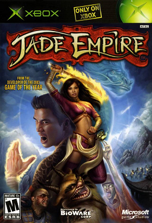

Jade Empire

Vad är Jade Empire?
Jade Empire är ett datorrollspel baserat på kinesisk mytologi som utspelar sig i realtid. Spelaren tar rollen av en student i en stridskonstskola som kastas in i ett farligt äventyr efter att fientliga styrkor bränner ner skolan, dödar de flesta av de andra studenterna, och tar mästaren till fånga.
Spelet tar (som sagt) plats i en värld inspirerad av kinesisk mytologi och man kommer att interagera med ett stort antal övernaturliga varelser av olika slag, dessutom finns det flygmaskiner. Spelet tar huvudsakligen plats inom det land som spelet är namngett efter (eller kanske det är tvärt om) vilket är tydligt inspirerat av forna tiders kina. Tidigt i spelet får man veta att ens mästare - Li - faktiskt är kejsarens - Sun Hais - broder och för tjugo år sedan - när ens karaktär var en bebis - räddade en från en massaker som leddes av Sun Hai. Själv är man den enda överlevanden utav munkordern som massakerades - the Spirit Monks - som agerade som väktare för en gudinna - the Water Dragon - vars kraft kejsaren villa stjäla så att han skulle kunna avbryta den torka som då drabbade imperiet. Strax efter att man för veta detta kommer en grupp av kejsarens trupper - specifikt an grupp av Lotus Assassins - som nu har upptäckt vart Li gömmer sig, och tar Li till fånga, bränner ner skolan och den närliggande byn, och dödar de flesta av invånarna. Tillsammans med en av de andra överlevande studenterna - Dawn Star - samt ett antal andra följare som man rekryterar längs vägen, ger du dig då ut mot huvudstaden för att rädda Li.
Jag har redan spelat igenom spelet två gånger helt och hållet (första gången jag körde igenom spelet missade jag några saker, så jag gick tillbaka till en tidigare sparfil och spelade om från den; sedan spelade jag om spelet helt från början för att se andra val).
Vad gillar jag om Jade Empire?
Jag tycker att handlingen och världen är väldigt engagerande, så spelet känns längre än det egentligen är - på ett bra sätt.
I spelet finns möjlighet att ingå i en romantisk relation med tre olika karaktärer (två kvinnor och en man), och man kan ingå i en romantisk relation med två av karaktärerna (mannen och en av kvinnorna) vare sig ens spelkaraktär är manlig eller kvinnlig. Dessutom finns det möjlighet för polyamori, en manlig karaktär kan ingå i en romantisk relation med båda kvinnorna samtidigt. Allt det här är en del av basspelet. Det finns mod som gör att båda kvinnor, och därmed också den polyamoriska romanser, är tillgängliga för kvinnliga spelkaraktärer.
Vad gillar jag inte om Jade Empire?
Man har något begränsade valmöjligheter när man skapar sin karaktär: man har ett mindre antal förskapade karaktärer att välja mellan, med olika namn, utseende, prioritering mellan de tre egenskaperna, samt stridsstil. Däremot kan man anpassa allt utom utseendet.
I strid kontrollerar man direkt hur ens karaktär rör sig och attackerar, vilket inte är min favorit, men vid lägsta svårighetsgraden har det inte varit något problem.
Det system av etiska filosofier som är i spelet (Open Palm vs Closed Fist) beskrivs på ett sådant sätt att det verkar mer komplext än gott-mot-ont, men implementationen av det är ofta bristande och man har ofta egentligen ett val mellan att vara en osjälvisk ängel eller en skitstövel.
Vid ett tilfälla träffade jag på en bugg som gjorde att jag fastnade i ett steg, men jag kunde lätt ladda ner ett mod som löste det problemet.
Spoilers
Visa/Göm
De andra följarna man kan rekrytera inkluderar: Sagacious Zu, som är en före detta Lotus Assassin; Wild Flower, en vandöd flicka som bebos av två olika demoner, en god och en ond, Chai Ka och Ya Zhen; Sky, en mindre tjuvaktig kille som vill hämnas hans dotters mord; Kang, en galen uppfinnare; Black Whirlwind, en psykopatisk och något korkad legosoldat; Henpecked Hou, en kock och före detta kampsportare som försöker fly från sin förskräckliga fru; Silk Fox, som egentligen är kejsarens dotter Sun Lian, och som gör hemligt motstånd mot tyranniet i imperiet, när ni först möts försöker hon döda en i tron att man är en agent för Lotus Assassins. Man har mot slutet möjlighet till att "rekrytera" Death's Hand, ledaren för Lotus Assassins. I en sektion släss man sida-vid-sida med spöket av ledaren för Spirit Monk-ordern. Dessutom kan man interagera med Zin Bu, en funktionär i den himmelska byrokratin som har fått i uppdrag att se till att du alltid har möjlighet att köpa det du behöver, och som har bestämt sig för att göra detta genom att direkt sälja dig saker.
Om man utför en serie sidouppdrag upptäcker man att Kang är en mindre gud.
Om man interagerar med honom på rätt sätt under spelets gång kommer Sagacious Zu att berätta om hur han var en av de som sändes för att döda Lis familj efter att han förrådde kejsaren, men han valde att inte döda Lis dotter, utan valde istället att förråda sina kamrater. Detta leder senare till avslöjandet att Dawn Star är Lis dotter, hon föddes efter Lis förräderi, vilket innebar att de aldrig möttes förrens hon kom till Lis skola.
Mäster Li var inte den som räddade en från massakern, han stod på Sun Hais sida. Men han ville sjäkv ha den kraft son de skulle stjäla så han konspirerade med deras tredje broder - Sun Kin - att döda Sun Hai och själva ta gudinnans kraft, men på grund av den kraften överlevde Sun Hai, han dödade Sun Kin och tvingade Sun Li till att fly. Han dödade då den överlevande munken som räddat dig och tog hans plats i hopp om att kunna omvandla dig till ett vapen mot Sun Hai. Sun Hai band då Sun Kins ande till Lis rustning och magiskt förslavade honom, han blev då känd som Death's Hand. Det här får du veta efter att du dödat Sun Hai och Sun Li sedan dödat dig. Man blir sedan återupplevad av the Water Dragon för att kunna frita henne. Men man kan välja att istället ta hennes kraft för sig själv, och då ta över imperiet.